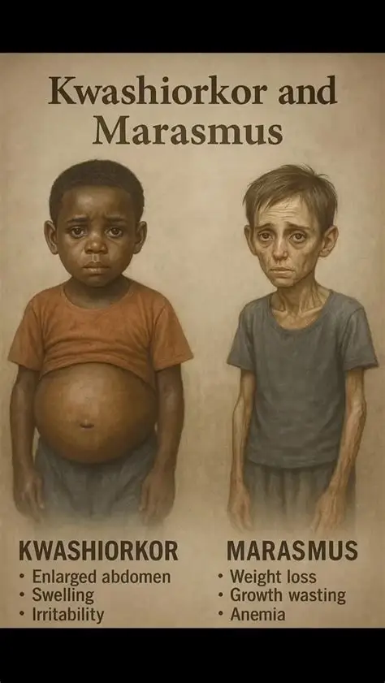

WEEK 5: FAMILY HEALTH (NUTRITION)
5.1 Definition of Nutrition
Nutrition is the process by which living things take in food and use it for growth, energy, repair of worn-out tissues and good health.
Food is any substance that is eaten or drunk that gives the body what it needs to live and grow.
Nutrients are the useful substances contained in food, e.g. carbohydrates, proteins, fats and oils, vitamins, minerals, water.
5.2 Functions of Food
- Provides energy for work, play and movement.
- Provides materials for growth of new cells and tissues.
- Repairs worn-out and damaged tissues (e.g. wounds).
- Protects the body against diseases (vitamins, minerals).
- Regulates body processes (e.g. blood clotting, temperature control).
- Keeps the body warm.
5.3 Types and Classification of Food
Food is classified into seven classes (nutrients):
| Class | Main function | Examples |
|---|---|---|
| Proteins | Growth and repair of the body | Beans, meat, fish, egg, milk, groundnut, soya beans, moi-moi |
| Fats and oils | Give energy (more than carbohydrates), keep the body warm, store energy | Palm oil, groundnut oil, butter, margarine, fatty meat, coconut |
| Carbohydrates | Give energy | Yam, rice, cassava (garri), potatoes, bread, maize, plantain, sugar |
| Vitamins | Protect the body from disease, keep the body working well | Fruits, vegetables, liver, eggs |
| Mineral salts | Build bones and teeth, make blood, help body regulation | Milk, fish, vegetables, salt, liver |
| Water | Dissolves nutrients, regulates temperature, carries waste | Water, fruits, soup |
| Roughage (fibre) | Prevents constipation, aids digestion | Vegetables, whole grains, fruits, beans |
Common vitamins and minerals:
| Nutrient | Source | Function | Deficiency disease |
|---|---|---|---|
| Vitamin A | Carrot, liver, palm oil, pawpaw | Good eyesight | Night blindness |
| Vitamin B | Whole grains, beans, meat | Healthy nerves, energy release | Beriberi |
| Vitamin C | Orange, lemon, guava, tomato | Healthy skin and gums, fights infection | Scurvy |
| Vitamin D | Sunlight, fish liver oil, egg yolk | Strong bones and teeth | Rickets |
| Vitamin K | Green leafy vegetables | Blood clotting | Excessive bleeding |
| Calcium | Milk, fish, egg | Strong bones and teeth | Rickets, weak bones |
| Iron | Liver, beans, red meat, green vegetables | Making red blood cells | Anaemia |
| Iodine | Salt (iodised), seafood | Healthy thyroid gland | Goitre |
Another classification by function:
Roughage (dietary fibre) is the part of plant food that the body cannot digest.
Sources: vegetables, fruits, whole grains, beans, brown rice, bran, unpeeled fruits.
Functions:
- Prevents constipation by helping food move through the gut.
- Gives bulk to the food.
- Helps to remove waste from the body.
- Reduces the risk of bowel diseases and some cancers.
- Gives a feeling of fullness, which helps to control weight.
5.5 Balanced Diet
A balanced diet is a meal that contains all the seven classes of food in the right amounts that the body needs.
Factors that determine a balanced diet:
- Age, sex and body size.
- Type of work or activity (a farmer needs more energy than an office worker).
- Health condition (a sick person, pregnant woman or growing child needs special food).
- Climate
Examples of a balanced meal:
- Breakfast: Pap (carbohydrate) with moi-moi (protein) and orange (vitamin C).
- Lunch: Rice (carbohydrate) with vegetable stew with fish (protein, vitamins, minerals) and a little oil, plus water and fruit.
- Dinner: Yam or eba with egusi or ugu soup (vegetable, protein, oil) and meat or fish.
importance of balanced diet
- Promotes proper growth.
- Provides energy.
- Prevents malnutrition and deficiency diseases.
- Gives resistance against diseases.
- Keeps the body fit and healthy.
5.6 Malnutrition and Deficiency Diseases
Malnutrition is a condition that results from eating too little, too much, or the wrong kind of food over a long time.
Types of malnutrition
- Undernutrition : Undernutrition means when there is not enough food or nutrients.
- Overnutrition – Overnutrition means when there is too much food (leads to obesity).
- Deficiency – Deficiency means when there is lack of a particular nutrient.
Deficiency diseases:
| Disease | Nutrient lacking | Signs and symptoms | Prevention / cure |
|---|---|---|---|
| Kwashiorkor | Protein | Swollen belly and feet (oedema), thin limbs, light, thin hair, skin sores, stunted growth, sad and weak child | Give protein-rich foods (milk, egg, beans, fish) |
| Marasmus | Protein and energy (carbohydrates) overall food shortage | Very thin, wrinkled "old man" face, ribs showing, wasted muscles | Give a balanced diet, medical care |
| Rickets | Vitamin D, calcium | Bow legs, soft bones, weak teeth | Sunlight, milk, fish, eggs |
| Scurvy | Vitamin C | Bleeding gums, slow wound healing, tiredness | Eat citrus fruits |
| Night blindness | Vitamin A | Cannot see well at night | Carrot, palm oil, vegetables |
| Beriberi | Vitamin B1 | Weak muscles, nerve problems, swollen legs | Eat whole grains, beans |
| Anaemia | Iron | Weakness, pale skin, tiredness | Eat liver, beans, vegetables |
| Goitre | Iodine | Swollen neck | Use iodised salt |
| Obesity | Excess fat and carbohydrate (overnutrition) | Overweight, difficulty in breathing, tiredness, risk of heart disease | Exercise, control diet |
